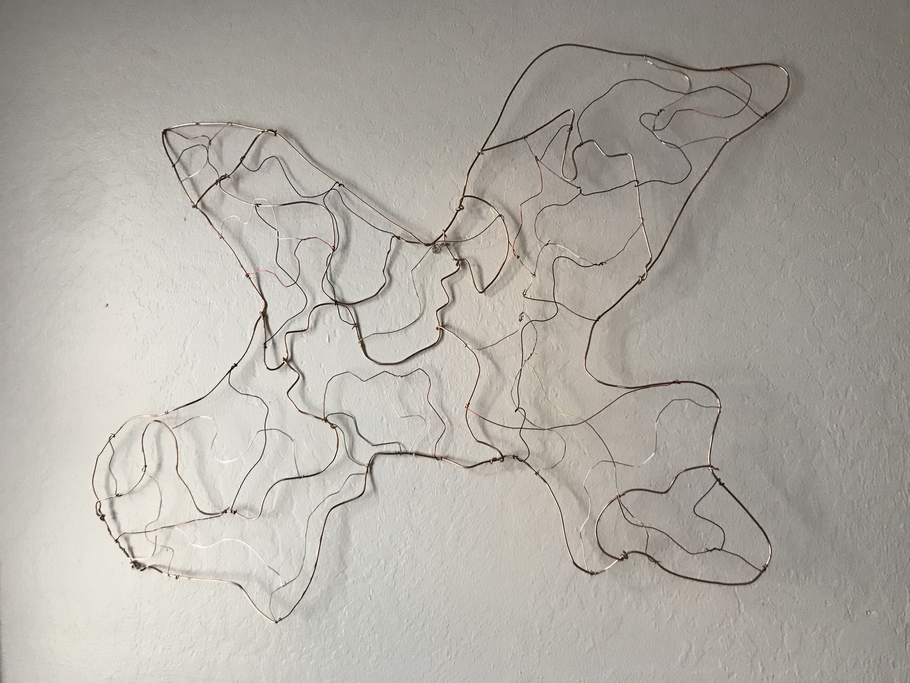
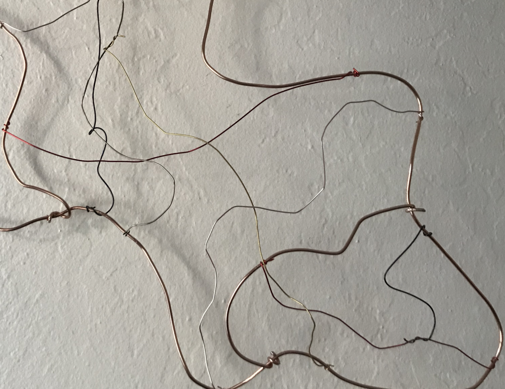
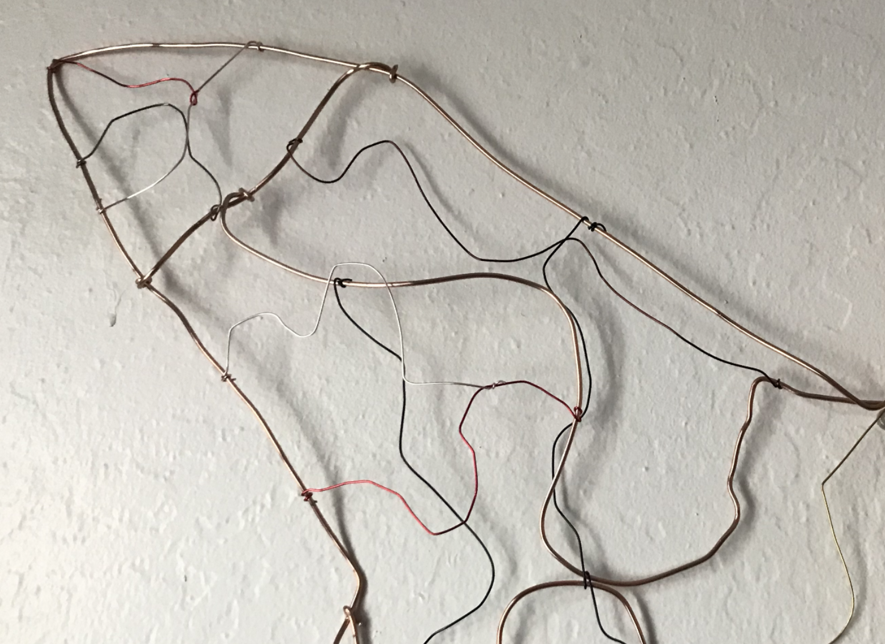

INTIMACY | LITLE BIG WORLD | WEIRDOS CHAT | SALTY | BUTTERCUP | HOME | QUEEN FLOWER | IT | LOST | ODE TO | TEMPTRESS OF THE TEMPTEST | PIZZAmania | Chupacabra| MAMA| Wakwak|


In response to Yoko Ono's, Map Piece I made a map out of wire, Untitled (18 in. x 26 in.). The map shown here is a representation of
The Lost City of Atlantis. I have always been infatuated with the idea of mystery and when the opportunity arose to
get lost in this art piece I took it and ran with it. I wanted to explore the medium of wire sculpture to recreate
Atlantis. In response to Yoko Ono, I thought about the approach and what it meant. My response was a literal one,
in where I made a map and got lost in it. I made the map out of different types of wire: thick, thin, red, pink, black,
silver, gray, and gold. Each color represented a different aspect of an actual map, such as, roads, freeways and highways.
The: get lost, came in the concept of getting lost in making the map. I got lost in the curves, colors, bumps, and in
time. In the end, the piece was a type of performance in the making of the map of Atlantis and that was my take on Yoko Ono.